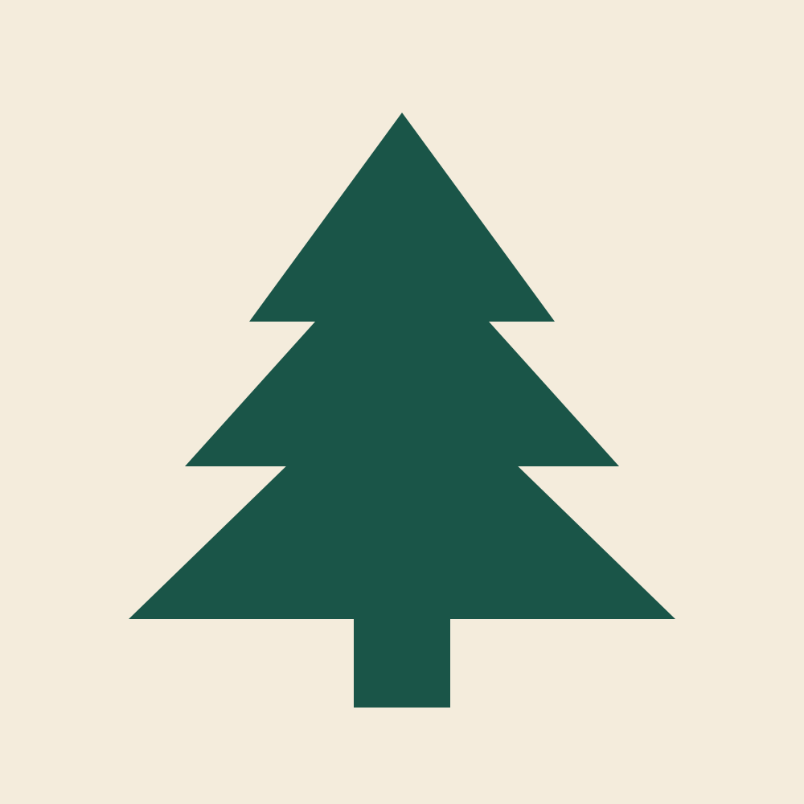
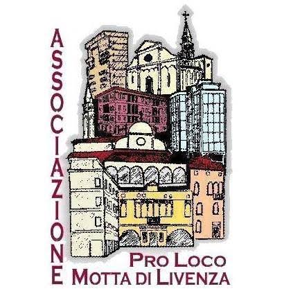

Christmas Edition
13
Domenicadicembre


Una giornata di gravel, Natale e convivialità!
44 km attorno a Motta · ristoro in Piazza Luzzati
Partenza libera
9.30–10.30Centro Polivalente di VillanovaVillanova di Motta di Livenza (TV)Parti quando vuoi nella fascia oraria
Arrivo
Pasta PartyCentro Polivalente di VillanovaVillanova di Motta di Livenza (TV)Non corri? Vieni lo stesso!Iscriviti!
Inquadra il QR e compila il modulo, oppure chiama o scrivi a Maurizio
Link nel messaggio, oppure chiama o scrivi a Maurizio
+39 349 559 4311Anche in negozio da Cicli Zabel.
Quota15 €
Organizzano
 Città di
Città diMotta di
Livenza


In collaborazione con



Locandina A3, versione chiara, ridotta. Versioni social: aggiungi #post, #story o #whatsapp all'indirizzo. PDF: stampa/Locandina-GravelRide-A3-chiara.pdf.